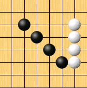
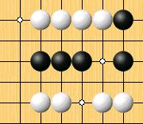
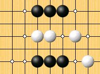
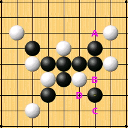
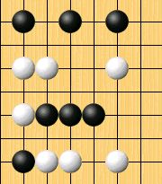
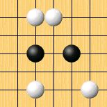
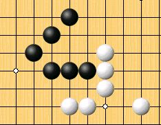
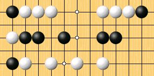
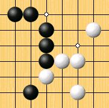
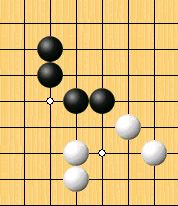

基本攻防
防守篇
活四：次一手兩邊皆可形成五的連線。
因活四的兩端各有一個勝點可以形成五，兩點必得其一，假設黑棋先下出活四，白棋只有認輸的份。

死四：次一手有一點可形成五的連線。
死四只有一個的勝點，對方先下出死四時，立刻要擋，只有唯一的擋法，別無選擇，所以棋諺常說”衝四不想”。

活三：次一手可形成活四的連線。
除非有四可以下，不然活三是必須防守的，否則變成活四就防不住了。
一般直三有兩種防法，有時有三個，如圖最下面那個直三就有三種防法可使它無法變成活四。
跳三有三個防法，下次遇到跳三時，別只想著擋中間，有時擋旁邊反而比較好哦。

如圖，黑形成活三，白有ＡＢＣ三個防點可選，要防哪好？

白棋若防Ａ或Ｂ，黑皆可在Ｄ點形成四三
所以正確即是防在Ｃ點，不僅擋住活三，也影響到後續黑的攻勢
死三：次一手可以形成死四的連線，其種類很多，又稱眠三或休三。
死三不需立刻防守，再下一子頂多變成死四。

活二：次一手可形成活三的連線。
活二不需立刻防守，再下一子頂多變成活三。

由前面的介紹可知
五和活四沒什麼差別，先下出者為勝。
死四以及活三是必須防守的，單下死四或活三，只要對方正確防守，是難以獲勝的
死三和活二則是形成死四以及活三的材料，雖不用馬上防守，但如果它們有交會點的話，就可能形成雙四、四三或雙活三，不可不注意。
攻擊篇
四四：一子形成兩個四，無論是活四或死四皆稱四四
圖中的白點為雙四點為，通常為二個死三的交會點
比較特別的是四四有可能是在同一條線上。


四三：一子形成一個四和一個活三，通常是死四和活三。
圖中的白點為四三點，也是死三和活二的交會點。

三三：或稱雙活三，即一子形成二個活三，該子為兩個活三的交點。
圖中白點為雙三點，也是兩個活二的交會點。除非對手有四可以進攻或防守，否則下出雙活三即可獲勝。

以上是五子棋基本的獲勝方法，形成雙四、四三或雙活三後，讓對方無法一子防守二邊而取勝。
大家下棋時，不要把目的放在連成五子上，因為要有五就必須要有雙四或活四，要有活四就必須要有四三或雙三，就像代公式一樣，所以初學時只要把心思放在形成雙四、四三或雙活三就足夠了，千萬不要指望對手會失誤而讓你簡單獲勝（特別注意斜的連線，這是初學者常會漏看的）。